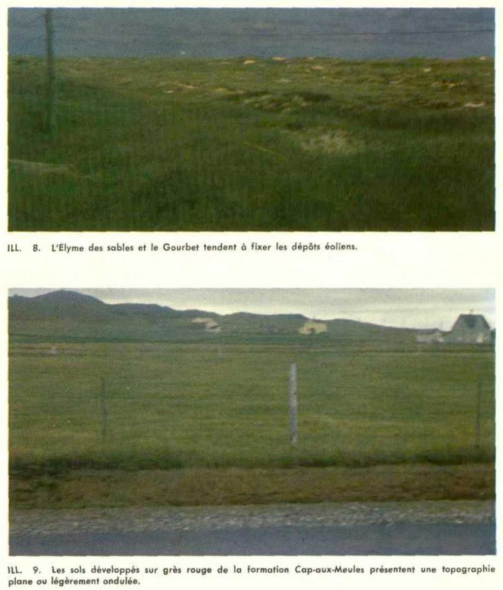
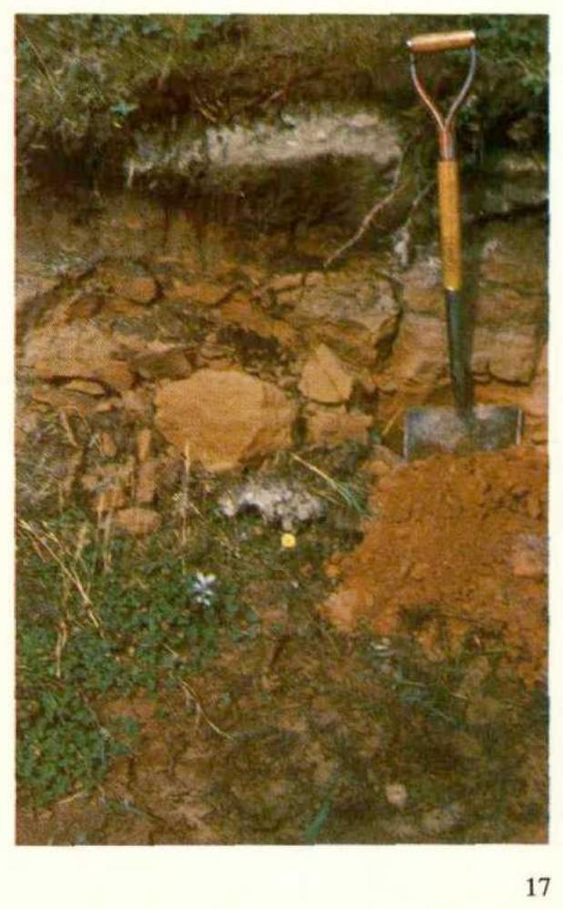
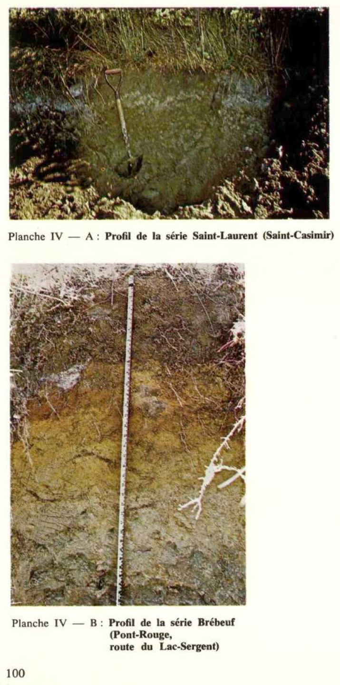
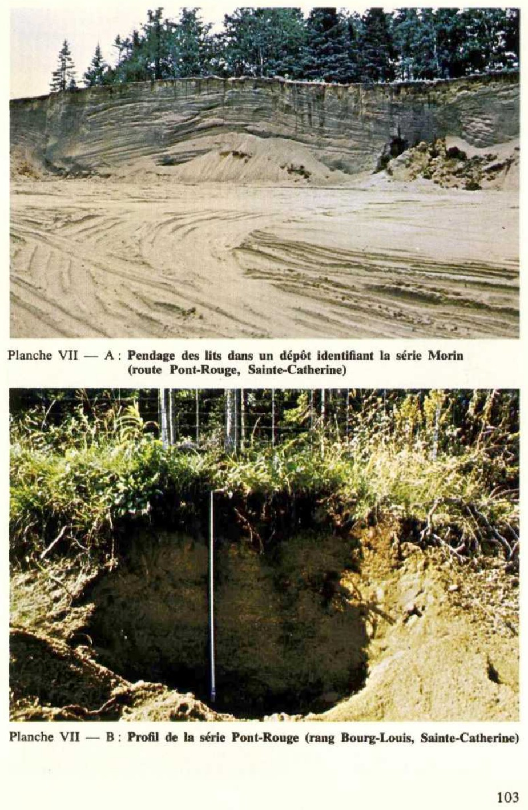

Identification & Caractéristiques Générales
La série Rouge s'est développée sur des sédiments meubles d'origine glaciomarine ou marine, reposant occasionnellement sur des dépôts marins profonds caractérisés par la présence de microfossiles calcaires. Ce sol se rencontre principalement en position de dépression topographique, en association avec les séries Richer et Réaume, ainsi qu'en périphérie des zones de sols organiques. La topographie locale est plane à légèrement concave, induisant des conditions de ruissellement lent et une accumulation d'eau saisonnière.
Morphologiquement, le profil pédologique se caractérise par une couche arable (Ap) de couleur foncée, particulièrement riche en matière organique, surmontant un horizon argillique enrichi en argile illuviale (Btg). La texture dominante du solum est un loam sableux à un sable loameux fin, présentant une fraction granulométrique grossière globalement inférieure à 20 % en volume. Le régime hydrique est marqué par un drainage très mauvais et une perméabilité modérée, la nappe phréatique s'établissant fréquemment à environ un mètre de profondeur. La réaction du sol varie d'un pH modérément acide en surface à modérément alcaline en profondeur, traduisant la présence du substrat marin sous-jacent.
Sur le plan agronomique, les contraintes majeures de la série Rouge découlent de l'excès hydrique temporaire et de la position topographique dépressive, qui retardent l'ressuage printanier et limitent la période végétative utile. Les aptitudes culturales se limitent principalement aux prairies permanentes, aux cultures fourragères ou aux pâturages, les grandes cultures intensives nécessitant des interventions d'aménagement rigoureuses. La mise en valeur agricole de ce type de sol requiert prioritairement l'installation d'un réseau de drainage souterrain adéquat pour abaisser la nappe phréatique, complété par un chaulage correctif en surface afin de neutraliser l'acidité initiale et d'optimiser la biodisponibilité des éléments nutritifs.
Classification Taxonomique & Environnement Pédologique
| Ordre Pédologique | Gleysolique |
|---|---|
| Grand Groupe (SCSS) | Gleysol luvique |
| Sous-Groupe Taxonomique | Gleysol luvique humique |
| Famille Pédologique | Loameuse-grossière, mixte sableux, alcalin (calcaire) |
| Mode de Dépôt Parental | Morainique |
| Classe de Drainage Naturel | Très mal drainé |
| Régime Thermique & Humidité | Frais / Ne s'applique pas |
Description Morphologique du Profil Type
Séquence génétique des horizons pédologiques caractérisant le profil type représentatif de la série Rouge :
Profil cultivé (agricole) — Les terres cultivées de la MRC d
✓ Source : Les terres cultivées de la MRC d — Page 45Couleur Munsell : 10YR 2/1, 10YR 3/2
Structure & Consistance : Polyédrique à granulaire
Description morphologique : Loam sableux argileux; noir (10 YR 2/1 h), brun gris très foncé (10 YR 3/2 s); sans structure; firme; racines très abondantes, moyennes et plus petites; fragments grossiers, graveleux, moins de 5%; limite abrupte, régulière; épaisseur de 10 à 13 cm; neutre.
Couleur Munsell : 10YR 3/1 (matrice), 2.5Y 5/2 (marbrures)
Structure & Consistance : Polyédrique à granulaire
Description morphologique : Loam sableux; gris très foncé (10 YR 3/1 h), brun gris (2.5 Y 5/2 s); marbrures nombreuses, grossières, marquées, brun jaune foncé (10 YR 3/6 h); massive, sans structure; friable à ferme; racines abondantes, moyennes et plus petites; effervescence (HCl 10%), forte; fragments grossiers, graveleux et caillouteux, 20%; limite nette, régulière; épaisseur de 10 à 15 cm; modérément alcalin.
Couleur Munsell : 5Y 4/1 (matrice), 5Y 6/2 (marbrures)
Structure & Consistance : Polyédrique à granulaire
Description morphologique : Loam sableux grossier; gris foncé (5 Y 4/1 h), gris olive clair (5 Y 6/2 s); marbrures rares, moyennes, distinctes, olive (5 Y 4/4 h); sans structure; très friable; racines peu abondantes, moyennes et plus petites; effervescence (HCl 10%), forte; fragments grossiers, graveleux et caillouteux, 5%; limite nette, régulière; modérément alcalin.
Couleur Munsell : 5Y 5/1 (matrice), 5Y 6/2 (marbrures)
Structure & Consistance : Polyédrique à granulaire
Description morphologique : Loam sableux; gris (5 Y 5/1 h), gris olive clair (5 Y 6/2 s); marbrures rares, fines, distinctes, olive (5 Y 4/3 h); sans structure; meuble; racines peu abondantes, moyennes et plus petites; effervescence (HCl 10%), forte; fragments grossiers, graveleux et caillouteux, 20%; limite nette, régulière; modérément alcalin.
Couleur Munsell : 5Y 4.5/1 (matrice), 5Y 6.5/1 (marbrures)
Structure & Consistance : Polyédrique à granulaire
Description morphologique : Loam sableux fin; gris à gris foncé (5 Y 4.5/1 h), gris clair à gris olive clair (5 Y 6.5/1 s); marbrures rares, moyennes, faibles et distinctes, olive (5 Y 4/4 h); massive, sans structure; ferme; racines peu abondantes, moyennes et plus petites; effervescence (HCl 10%), forte; fragments grossiers, graveleux et caillouteux, 10%; peu alcalin.
Profils Photographiques & Planches de Terrain
Documents iconographiques, figures pédologiques et coupes de terrain documentées dans les mémoires d'inventaire pour de la série Rouge :





Propriétés Physico-Chimiques & Analyses de Laboratoire
| Horizon | Prof. limite | Sable % | Limon % | Argile % | pH | C org. % | M.O. % | N tot. % | Ca éch. | Mg éch. | C.E.C. |
|---|---|---|---|---|---|---|---|---|---|---|---|
| Ah | 0-13 | 51 | 21 | 28 | 6,79 | 6,27 | 5,63 | 0,321 | 0,117 | 1,292 | 0,107 |
| Aekg | 13-23 | 80 | 9 | 11 | 7,9 | 7,31 | 0,66 | 0,097 | 0,042 | 0,467 | 0,041 |
| Btkg | 23-37 | 72 | 11 | 17 | 8,14 | 7,55 | 0,32 | 0,071 | 0,025 | 0,472 | 0,042 |
| Ckg1 | 37-60 | 67 | 18 | 15 | 8,07 | 7,66 | 0,31 | 0,049 | 0,010 | 0,439 | 0,038 |
| Ckg2 | 60+ | 56 | 32 | 12 | 7,66 | 7,56 | 0,39 | 0,031 | -0,002 | 0,190 | 0,018 |
Particularités Régionales, Phases & Variantes Pédologiques
Déclinaisons régionales, faciès texturaux, phases d'érosion ou de pierrosité et variantes cartographiées par étude pour de la série Rouge :
| Étude Régionale | Symbole | Appellation / Phase / Variante | Différenciation avec la série type (Analyse pédologique) |
|---|---|---|---|
| MRC de la Côte-de-Beaupré | RO |
Rouge loam sableux à sable loameux fin | Modalité modale de référence (type de base de la série). |
| Les terres cultivées de la MRC d | ROG |
Rouge | Conforme à la série type de référence (caractéristiques texturales et drainage identiques). |
Distribution Pédo-Paysagère & Représentativité Cartographique (Couverture PPS 2026)
- Auteuil loam argileux à argile (AUT) — co-occurrente dans 4 polygone(s)
- Des Caps loam sableux (DCA) — co-occurrente dans 2 polygone(s)
- Rhéaume loam sableux à loam sableux fin (RHE) — co-occurrente dans 2 polygone(s)
Aptitudes Agronomiques, Hydropédologie & Conservation des Sols
Indicateurs Hydropédologiques & Vulnérabilité à l'Érosion (BDHP 2026)
Interprétation BDHP : Potentiel de ruissellement modérément élevé. Faible taux d'infiltration, présence d'horizons ralentissant le drainage descendant.
Classement selon l'Inventaire des Terres du Canada (ITC / CLI) : Classe 2w.
- Potentiel agricole : Terroir adapté aux cultures régionales selon la texture dominante et la régie de drainage.
- Contraintes majeures : Très mal drainé. Risque d'engorgement temporaire ou d'excès d'eau printanier.
- Gestion & Aménagement : Drainage souterrain ou superficiel préconisé sur les terres planes. Chaulage et apport organique régulier selon les bilans agronomiques.
- Cultures adaptées : Grandes cultures (maïs, soya, céréales), prairies fourragères et cultures maraîchères selon le contexte géomorphologique.